Comparison of Break Down, LIME and Shapley values
For a bit more insight, you can go through this tutorial obtained from here: https://github.com/ModelOriented/DALEX-docs/blob/master/vignettes/Comparison%20between%20breakdown%2C%20lime%2C%20shapley.Rmd Should take 2 mins to run.
In the vignette below we will see how methods implemented in DALEX R packages focuses on variables in selected model. For our model we consider Break Down, LIME and Shapley values.
Data
To illustrate the differences in explanation of prediction between methods we will use an artificial dataset created below.
We also want to find the differences between interactions and additive effect in model.
Models
df_train <- df[1:1000,]
df_test <- df[1001:nrow(df),]
library(mlr)
regr_task_y1 <- makeRegrTask(id = "df_y1", data = df_train[,-2], target = "y1")
regr_lrn_rf_y1 <- makeLearner("regr.randomForest")
regr_rf_y1 <- train(regr_lrn_rf_y1, regr_task_y1)
regr_task_y2 <- makeRegrTask(id = "df_y2", data = df_train[,-1], target = "y2")
regr_lrn_rf_y2 <- makeLearner("regr.randomForest")
regr_rf_y2 <- train(regr_lrn_rf_y2, regr_task_y2)Methods
In this vignette we would like to compare three approaches to analysis of a single prediction: Break Down, LIME and Shapley value.
Break Down
Break Down is the methodology delevoped by Przemysław Biecek and Mateusz Staniak. A description of the method can be found here.
This methodology is implemented by Przemysław Biecek and Mateusz Staniak in the R package breakDown. Currently available in the R package DALEX.
The breakDown package is a model agnostic tool for decomposition of predictions from black boxes. Break Down Table shows contributions of every variable to a final prediction. Break Down Profile presents variable contributions in a concise graphical way.
LIME (Local Interpretable Model-agnostic Explanations)
LIME is the methodology developed by Marco Tulio Ribeiro, Sameer Singh, and Carlos Guestrin. A description of the method can be found here.
The purpose of LIME is to explain the predictions of black box classifiers. What this means is that for any given prediction and any given classifier it is able to determine a small set of features in the original data that has driven the outcome of the prediction. Using here package lime is an R port of the Python lime package (https://github.com/marcotcr/lime) developed by the authors of the lime approach for black-box model explanations.
Shapley value
A methodology based on the use of Shapley value known from game theory to explain predictions is developed by Scott Lundberg and Su-In Lee. A description of the method can be found here.
The Shapley value is a method that gives a solution to the following problem: A coalition of players play a game, for which they get a payout, but it is not clear how to distribute the payout fairly among the players. The Shapley value solves this problem by trying out different coalitions of players to decide how much each player changes the amount of the payout. What does this have to do with machine learning? In machine learning, the features (= players) work together to get the payout (=predicted value). The Shapley value tells us, how much each feature contributed to the prediction.
We use Shapley value implementation in the R package DALEX.
Explainer object
We create a explainer which is an object/adapter that wraps the model and creates an uniform structure and interface for operation. We use a DALEXtra R package which is an extension of DALEX and supports models built in mlr.
explainer_regr_rf_y1 <- DALEXtra::explain_mlr(regr_rf_y1, data = df_test[,-c(1,2)], y = df_test$y1, label = "randomforest_1")Preparation of a new explainer is initiated
-> model label : randomforest_1
-> data : 9000 rows 2 cols
-> target variable : 9000 values
-> predict function : yhat.WrappedModel will be used ( default )
-> predicted values : No value for predict function target column. ( default )
-> model_info : package mlr , ver. 2.19.3 , task regression ( default )
-> predicted values : numerical, min = -3.201019 , mean = -0.02157578 , max = 3.251853
-> residual function : difference between y and yhat ( default )
-> residuals : numerical, min = -3.954667 , mean = -0.02344241 , max = 4.018775
A new explainer has been created! explainer_regr_rf_y2 <- DALEXtra::explain_mlr(regr_rf_y2, data = df_test[,-c(1,2)], y = df_test$y2, label = "randomforest_2")Preparation of a new explainer is initiated
-> model label : randomforest_2
-> data : 9000 rows 2 cols
-> target variable : 9000 values
-> predict function : yhat.WrappedModel will be used ( default )
-> predicted values : No value for predict function target column. ( default )
-> model_info : package mlr , ver. 2.19.3 , task regression ( default )
-> predicted values : numerical, min = -2.272377 , mean = -0.02608881 , max = 2.174938
-> residual function : difference between y and yhat ( default )
-> residuals : numerical, min = -3.879196 , mean = 0.01098456 , max = 4.207064
A new explainer has been created! Model with additive effect
Now for the three new observations we will compare results of Break Down, LIME and Shapley value for model with additive effect between variables x1 and x2.
x1 = -1, x2 = -1
Explainers
new_observation_1 <- data.frame(x1 = -1, x2 = -1)
df_test <- rbind(df_test, data.frame(y1 = sign(-1) + sign(-1) + rnorm(1) , y2 = sign(-1)*sign(-1) + rnorm(1), x1 = -1, x2 = -1), data.frame(y1 = sign(-1) + sign(1) + rnorm(1) , y2 = sign(-1)*sign(1) + rnorm(1), x1 = -1, x2 = 1),
data.frame(y1 = sign(0) + sign(0) + rnorm(1) , y2 = sign(0)*sign(0) + rnorm(1), x1 = 0, x2 = 0))
bd_new_observation_1 <- predict_parts(explainer_regr_rf_y1, new_observation_1, type = "break_down")
explainer <- lime(df_train[,-c(1,2)], regr_rf_y1)
lime_new_observation_1 <- lime::explain(new_observation_1, explainer, n_features = 2)
sh_new_observation_1 <- predict_parts(explainer_regr_rf_y1, new_observation_1, type = "shap")Comparison
plot(bd_new_observation_1)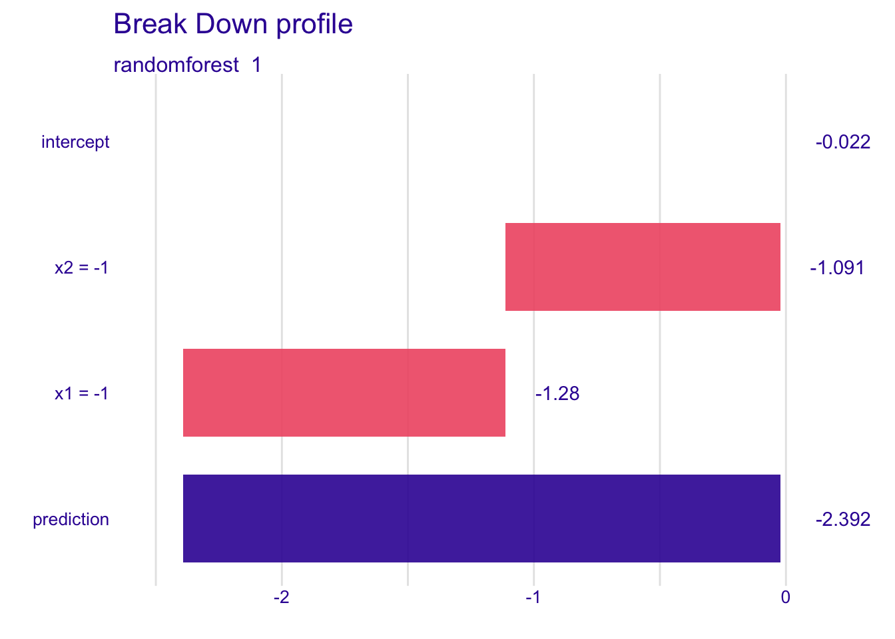
plot_features(lime_new_observation_1)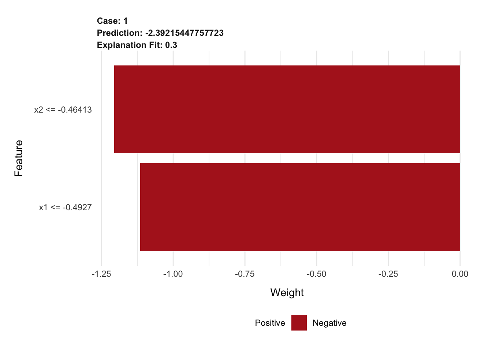
lime_new_observation_1# A tibble: 2 × 11
model_type case model_r2 model_intercept model_prediction feature
<chr> <chr> <dbl> <dbl> <dbl> <chr>
1 regression 1 0.301 0.260 -2.06 x1
2 regression 1 0.301 0.260 -2.06 x2
# ℹ 5 more variables: feature_value <dbl>, feature_weight <dbl>,
# feature_desc <chr>, data <list>, prediction <dbl>plot(sh_new_observation_1)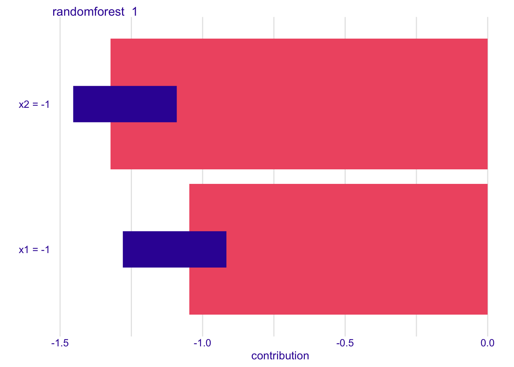
We see that in all methods both, x1 and x2 contradicts the predicted value of y1.
x1 = -1, x2 = 1
Explainers
new_observation_2 <- data.frame(x1 = -1, x2 = 1)
bd_new_observation_2 <- predict_parts(explainer_regr_rf_y1, new_observation_2, type = "break_down")
lime_new_observation_2 <- lime::explain(new_observation_2, explainer, n_features = 2)
sh_new_observation_2 <- predict_parts(explainer_regr_rf_y1, new_observation_2, type = "shap")Comparison
plot(bd_new_observation_2)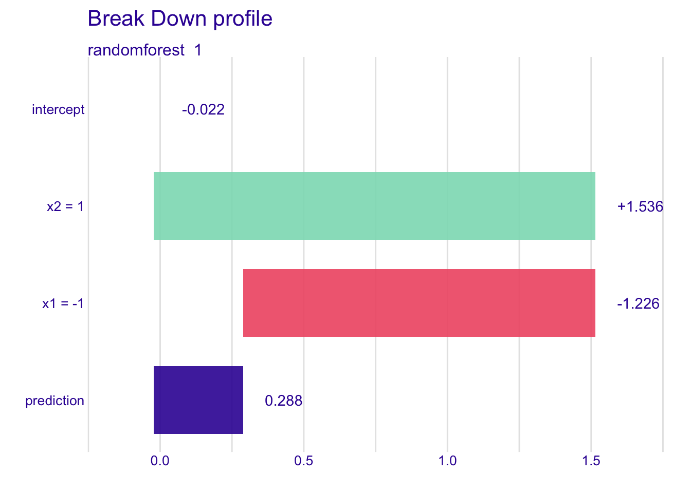
plot_features(lime_new_observation_2)
lime_new_observation_2# A tibble: 2 × 11
model_type case model_r2 model_intercept model_prediction feature
<chr> <chr> <dbl> <dbl> <dbl> <chr>
1 regression 1 0.168 0.441 0.288 x1
2 regression 1 0.168 0.441 0.288 x2
# ℹ 5 more variables: feature_value <dbl>, feature_weight <dbl>,
# feature_desc <chr>, data <list>, prediction <dbl>plot(sh_new_observation_2)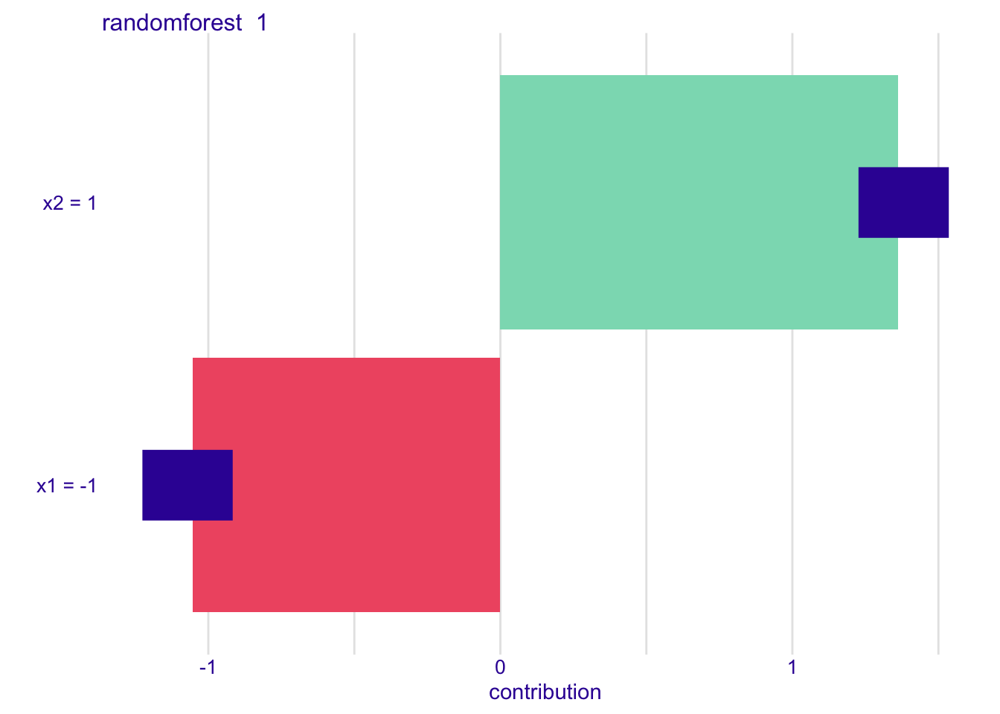
For all methods we see that variable x1 contradicts the prediction and x2 supports it.
x1 = 0, x2 = 0
Explainers
new_observation_3 <- data.frame(x1 = 0, x2 = 0)
bd_new_observation_3 <- predict_parts(explainer_regr_rf_y1, new_observation_3, type = "break_down")
lime_new_observation_3 <- lime::explain(new_observation_3, explainer, n_features = 2)
sh_new_observation_3 <- predict_parts(explainer_regr_rf_y1, new_observation_3, type = "shap")Comparison
plot(bd_new_observation_3)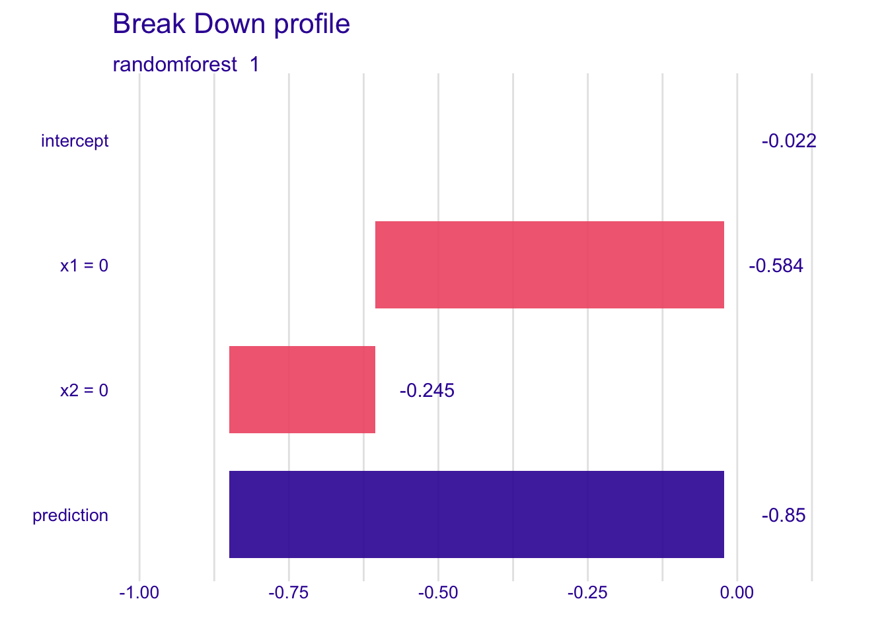
plot_features(lime_new_observation_3)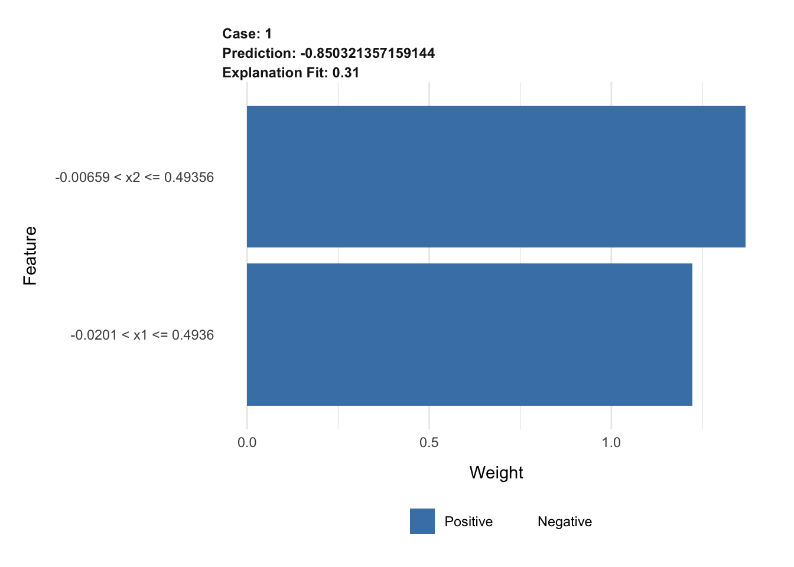
lime_new_observation_3# A tibble: 2 × 11
model_type case model_r2 model_intercept model_prediction feature
<chr> <chr> <dbl> <dbl> <dbl> <chr>
1 regression 1 0.306 -0.733 1.86 x1
2 regression 1 0.306 -0.733 1.86 x2
# ℹ 5 more variables: feature_value <dbl>, feature_weight <dbl>,
# feature_desc <chr>, data <list>, prediction <dbl>plot(sh_new_observation_3)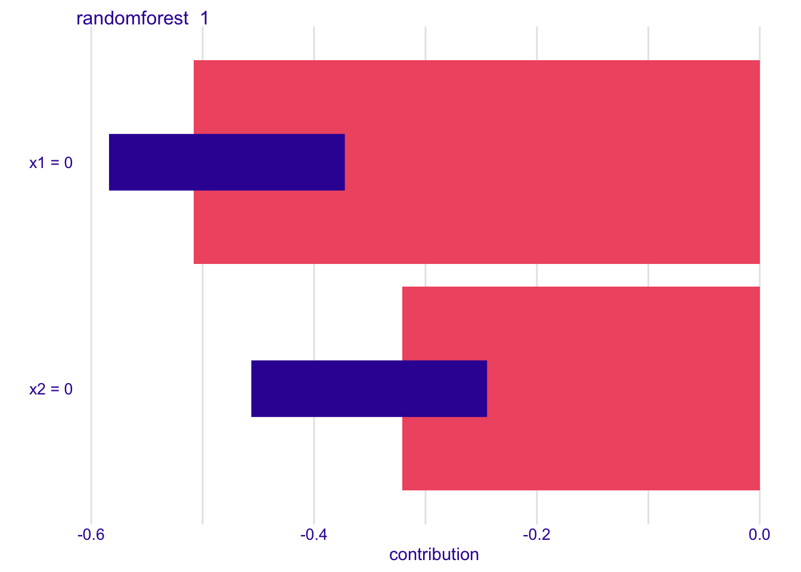
For Break Down and Shapley value we see that both variables contradicts the prediction, but in LIME method we see that both variables support the value of y1.
Model with interaction
Now for the three new observations we will compare results of Break Down, LIME and Shapley value for the model with interaction between variables x1 and x2.
x1 = -1, x2 = -1
Explainers
new_observation_1 <- data.frame(x1 = -1, x2 = -1)
bd_new_observation_1 <- predict_parts(explainer_regr_rf_y2, new_observation_1, type = "break_down")
explainer <- lime(df_train[,-c(1,2)], regr_rf_y2)
lime_new_observation_1 <- lime::explain(new_observation_1, explainer, n_features = 2)
sh_new_observation_1 <- predict_parts(explainer_regr_rf_y2, new_observation_1, type = "shap")Comparison
plot(bd_new_observation_1)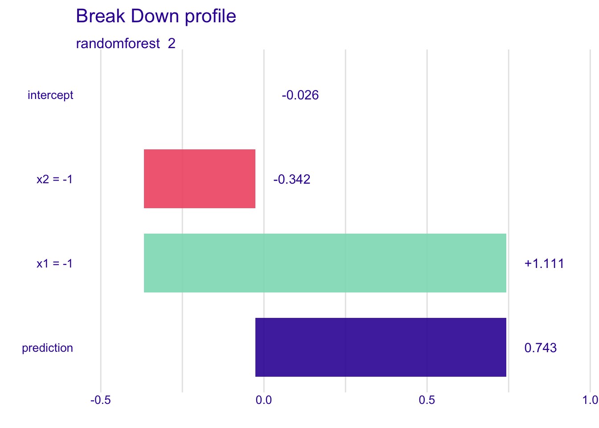
plot_features(lime_new_observation_1)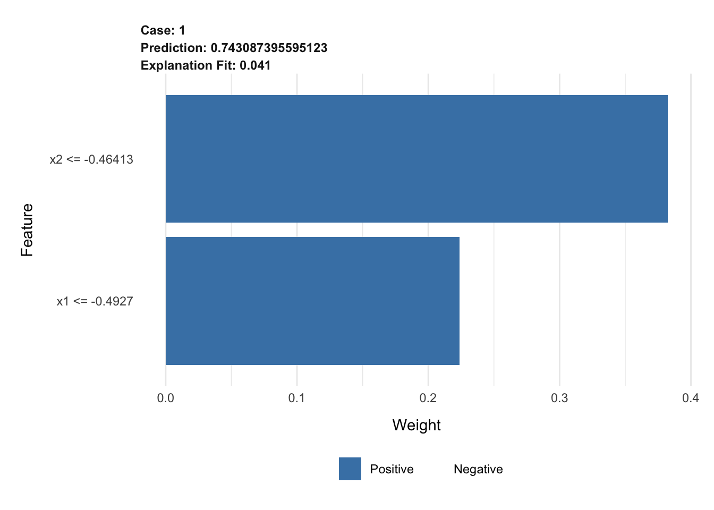
lime_new_observation_1# A tibble: 2 × 11
model_type case model_r2 model_intercept model_prediction feature
<chr> <chr> <dbl> <dbl> <dbl> <chr>
1 regression 1 0.0415 -0.239 0.367 x1
2 regression 1 0.0415 -0.239 0.367 x2
# ℹ 5 more variables: feature_value <dbl>, feature_weight <dbl>,
# feature_desc <chr>, data <list>, prediction <dbl>plot(sh_new_observation_1)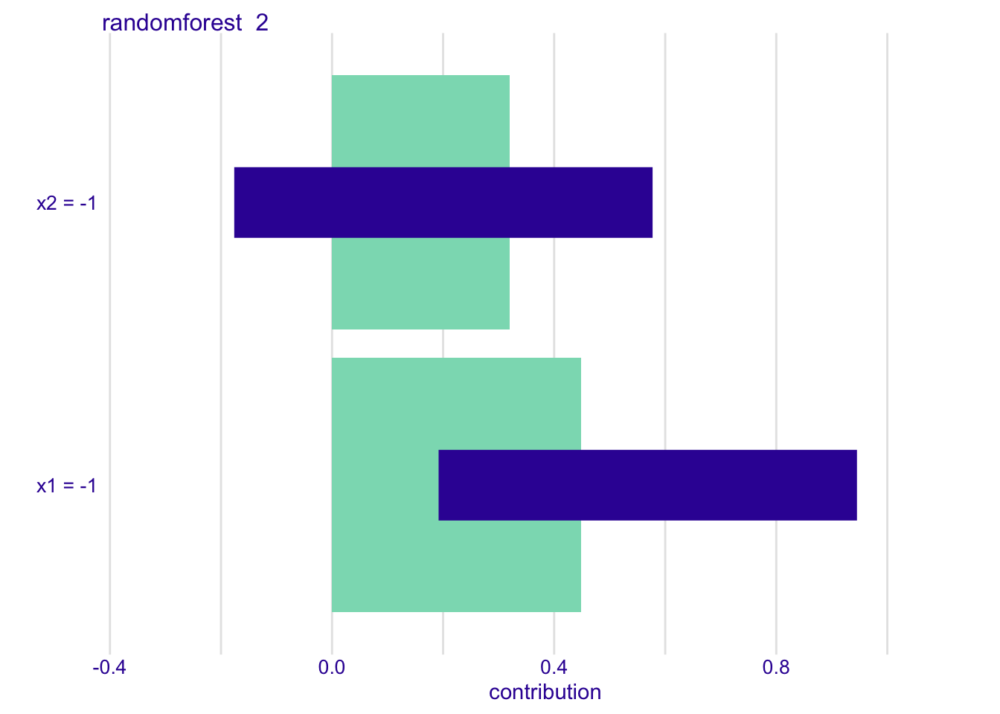
We see that in LIME and Shapley value x1 and x2 support the predicted value of y2. In Break Down x1 supports and x2 contradicts prediction.
x1 = -1, x2 = 1
Explainers
new_observation_2 <- data.frame(x1 = -1, x2 = 1)
bd_new_observation_2 <- predict_parts(explainer_regr_rf_y2, new_observation_2, type = "break_down")
lime_new_observation_2 <- lime::explain(new_observation_2, explainer, n_features = 2)
sh_new_observation_2 <- predict_parts(explainer_regr_rf_y2, new_observation_2, type = "shap")Comparison
plot(bd_new_observation_2)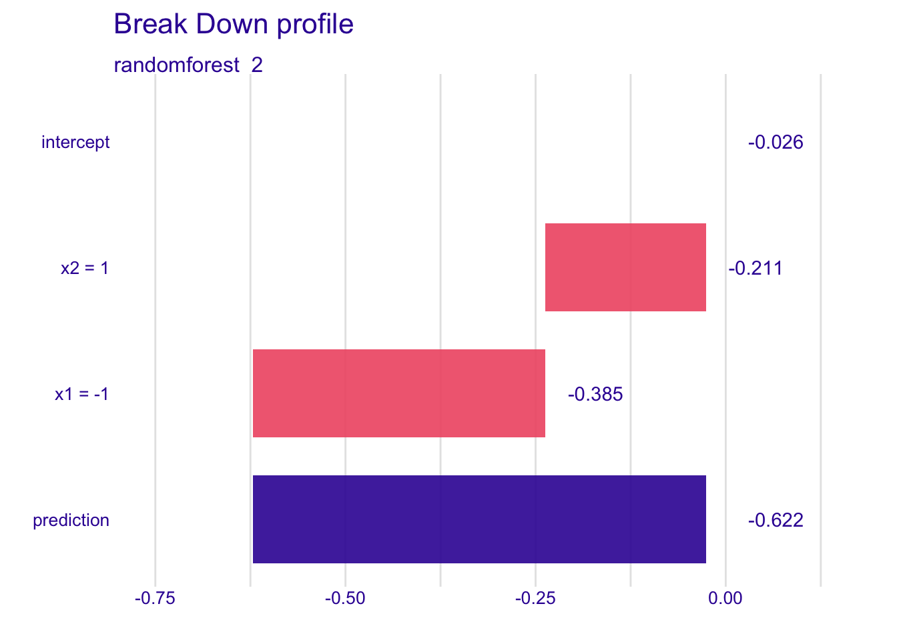
plot_features(lime_new_observation_2)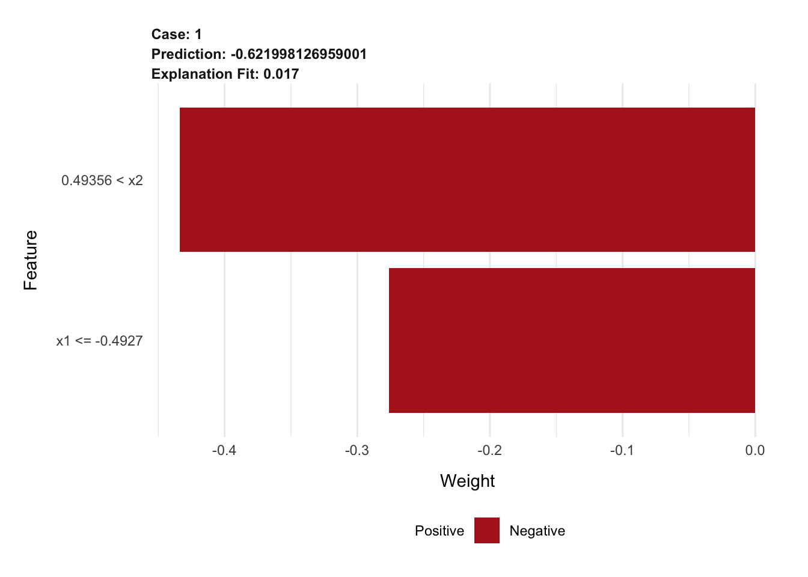
lime_new_observation_2# A tibble: 2 × 11
model_type case model_r2 model_intercept model_prediction feature
<chr> <chr> <dbl> <dbl> <dbl> <chr>
1 regression 1 0.0166 0.0878 -0.622 x1
2 regression 1 0.0166 0.0878 -0.622 x2
# ℹ 5 more variables: feature_value <dbl>, feature_weight <dbl>,
# feature_desc <chr>, data <list>, prediction <dbl>plot(sh_new_observation_2)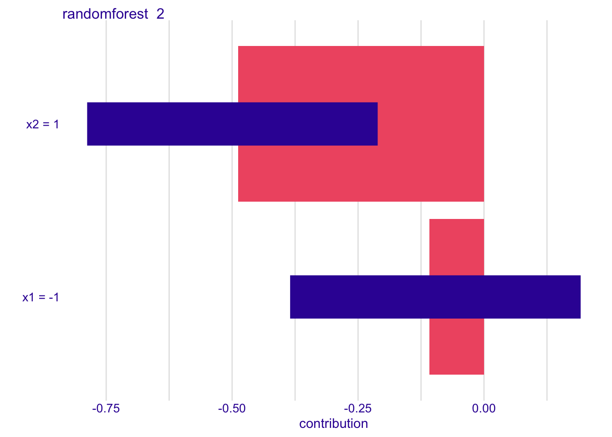
For all methods we see that both variables contradict the prediction.
x1 = 0, x2 = 0
Explainers
new_observation_3 <- data.frame(x1 = 0, x2 = 0)
bd_new_observation_3 <- predict_parts(explainer_regr_rf_y2, new_observation_3, type = "break_down")
lime_new_observation_3 <- lime::explain(new_observation_3, explainer, n_features = 2)
sh_new_observation_3 <- predict_parts(explainer_regr_rf_y2, new_observation_3, type = "shap")Comparison
plot(bd_new_observation_3)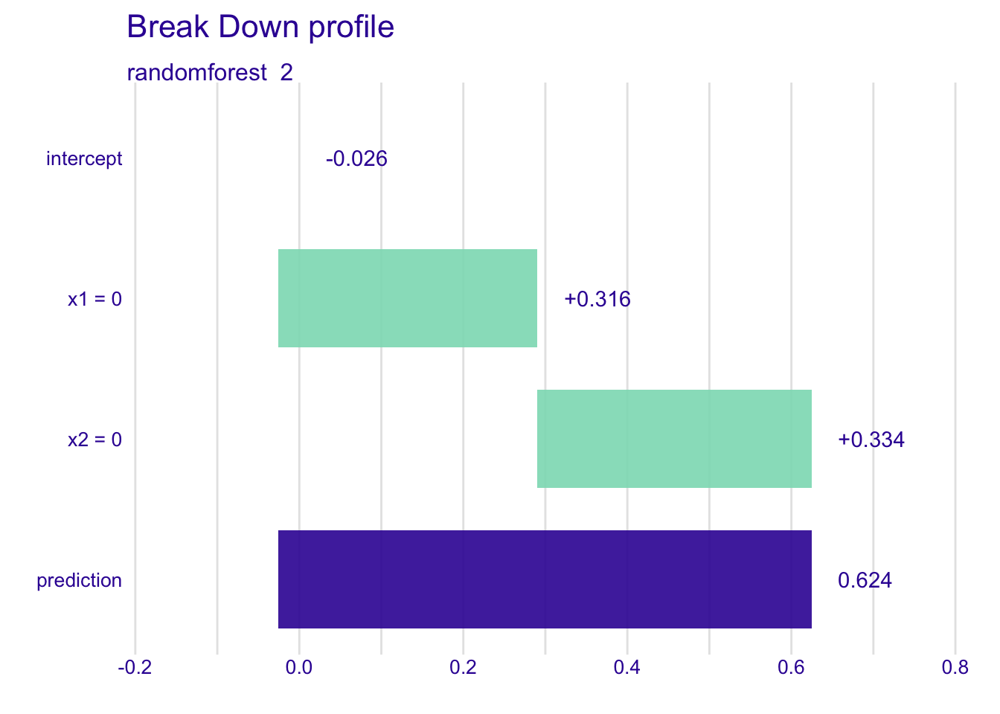
plot_features(lime_new_observation_3)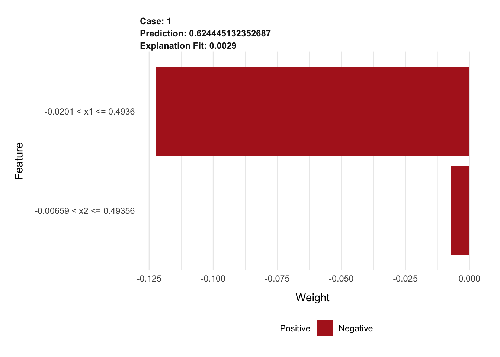
lime_new_observation_3# A tibble: 2 × 11
model_type case model_r2 model_intercept model_prediction feature
<chr> <chr> <dbl> <dbl> <dbl> <chr>
1 regression 1 0.00291 0.0170 -0.113 x1
2 regression 1 0.00291 0.0170 -0.113 x2
# ℹ 5 more variables: feature_value <dbl>, feature_weight <dbl>,
# feature_desc <chr>, data <list>, prediction <dbl>plot(sh_new_observation_3)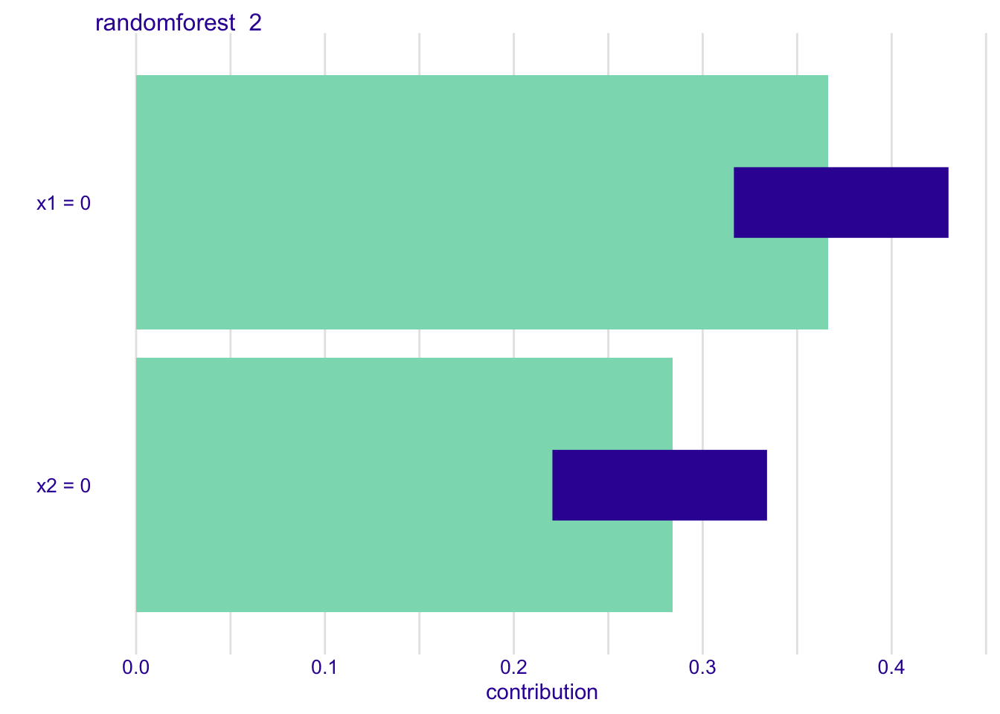
For Break Down and Shapley values we see that both variables support the prediction, but in LIME method we see that both variables contradict the value of y2.
Comparison for additive and interaction effect
After plotting the values of explainers for Break Down, LIME and Shapley value we see that for model with additive effect all three methods produce similar results (only in the case of observation with x1 = 0 and x2 = 0). On the other hand, when considering the model with interactions, we see that the results for our methods are usually different (only in the case of observation with x1 = -1 and x2 = 1 we have similar results).
Session info
R version 4.5.1 (2025-06-13)
Platform: aarch64-apple-darwin20
Running under: macOS Sequoia 15.3.1
Matrix products: default
BLAS: /Library/Frameworks/R.framework/Versions/4.5-arm64/Resources/lib/libRblas.0.dylib
LAPACK: /Library/Frameworks/R.framework/Versions/4.5-arm64/Resources/lib/libRlapack.dylib; LAPACK version 3.12.1
locale:
[1] en_US.UTF-8/en_US.UTF-8/en_US.UTF-8/C/en_US.UTF-8/en_US.UTF-8
time zone: Europe/London
tzcode source: internal
attached base packages:
[1] stats graphics grDevices utils datasets methods base
other attached packages:
[1] mlr_2.19.3 ParamHelpers_1.14.2 randomForest_4.7-1.2
[4] lime_0.5.3 DALEX_2.5.3
loaded via a namespace (and not attached):
[1] utf8_1.2.6 generics_0.1.4 shape_1.4.6.1 stringi_1.8.7
[5] lattice_0.22-7 digest_0.6.37 magrittr_2.0.4 evaluate_1.0.5
[9] grid_4.5.1 RColorBrewer_1.1-3 BBmisc_1.13 iterators_1.0.14
[13] fastmap_1.2.0 foreach_1.5.2 jsonlite_2.0.0 glmnet_4.1-10
[17] Matrix_1.7-3 backports_1.5.0 survival_3.8-3 scales_1.4.0
[21] XML_3.99-0.20 codetools_0.2-20 cli_3.6.5 rlang_1.1.6
[25] splines_4.5.1 withr_3.0.2 iBreakDown_2.1.2 yaml_2.3.10
[29] parallel_4.5.1 tools_4.5.1 checkmate_2.3.3 dplyr_1.1.4
[33] ggplot2_4.0.1 fastmatch_1.1-6 assertthat_0.2.1 vctrs_0.6.5
[37] R6_2.6.1 lifecycle_1.0.4 htmlwidgets_1.6.4 parallelMap_1.5.1
[41] pkgconfig_2.0.3 pillar_1.11.1 gtable_0.3.6 glue_1.8.0
[45] data.table_1.17.8 Rcpp_1.1.0 DALEXtra_2.3.0 xfun_0.54
[49] tibble_3.3.0 tidyselect_1.2.1 rstudioapi_0.17.1 knitr_1.50
[53] farver_2.1.2 htmltools_0.5.8.1 labeling_0.4.3 rmarkdown_2.30
[57] gower_1.0.2 compiler_4.5.1 S7_0.2.1
:::{#quarto-navigation-envelope .hidden}
[Explainable AI]{.hidden .quarto-markdown-envelope-contents render-id="cXVhcnRvLWludC1zaWRlYmFyLXRpdGxl"}
[HDS MSc - Module 3 - XAI]{.hidden .quarto-markdown-envelope-contents render-id="cXVhcnRvLWludC1uYXZiYXItdGl0bGU="}
[Random Forest Variable Importance and SHAP on Pima Indians Diabetes (Python)]{.hidden .quarto-markdown-envelope-contents render-id="cXVhcnRvLWludC1uZXh0"}
[Explainable AI]{.hidden .quarto-markdown-envelope-contents render-id="cXVhcnRvLWludC1wcmV2"}
[Explainable AI]{.hidden .quarto-markdown-envelope-contents render-id="cXVhcnRvLWludC1zaWRlYmFyOi9EQUxFWF90aWR5bW9kZWxzX2V4YW1wbGUuaHRtbEV4cGxhaW5hYmxlLUFJ"}
[Comparison of Break Down, LIME and Shapley values]{.hidden .quarto-markdown-envelope-contents render-id="cXVhcnRvLWludC1zaWRlYmFyOi9FeHRyYS5odG1sQ29tcGFyaXNvbi1vZi1CcmVhay1Eb3duLC1MSU1FLWFuZC1TaGFwbGV5LXZhbHVlcw=="}
[Random Forest Variable Importance and SHAP on Pima Indians Diabetes (Python)]{.hidden .quarto-markdown-envelope-contents render-id="cXVhcnRvLWludC1zaWRlYmFyOi9waW1hX3JmX3NoYXBfcHl0aF9leGFtcGxlLmh0bWxSYW5kb20tRm9yZXN0LVZhcmlhYmxlLUltcG9ydGFuY2UtYW5kLVNIQVAtb24tUGltYS1JbmRpYW5zLURpYWJldGVzLShQeXRob24p"}
[Explainable AI]{.hidden .quarto-markdown-envelope-contents render-id="cXVhcnRvLWludC1uYXZiYXI6RXhwbGFpbmFibGUgQUk="}
[/DALEX_tidymodels_example.html]{.hidden .quarto-markdown-envelope-contents render-id="cXVhcnRvLWludC1uYXZiYXI6L0RBTEVYX3RpZHltb2RlbHNfZXhhbXBsZS5odG1s"}
[Comparison of Break Down, LIME and Shapley values]{.hidden .quarto-markdown-envelope-contents render-id="cXVhcnRvLWJyZWFkY3J1bWJzLUNvbXBhcmlzb24tb2YtQnJlYWstRG93biwtTElNRS1hbmQtU2hhcGxleS12YWx1ZXM="}
:::{.hidden .quarto-markdown-envelope-contents render-id="Zm9vdGVyLWxlZnQ="}
Copyright 2024, Laura Bravo
:::
:::
:::{#quarto-meta-markdown .hidden}
[Comparison of Break Down, LIME and Shapley values – HDS MSc - Module 3 - XAI]{.hidden .quarto-markdown-envelope-contents render-id="cXVhcnRvLW1ldGF0aXRsZQ=="}
[Comparison of Break Down, LIME and Shapley values – HDS MSc - Module 3 - XAI]{.hidden .quarto-markdown-envelope-contents render-id="cXVhcnRvLXR3aXR0ZXJjYXJkdGl0bGU="}
[Comparison of Break Down, LIME and Shapley values – HDS MSc - Module 3 - XAI]{.hidden .quarto-markdown-envelope-contents render-id="cXVhcnRvLW9nY2FyZHRpdGxl"}
[HDS MSc - Module 3 - XAI]{.hidden .quarto-markdown-envelope-contents render-id="cXVhcnRvLW1ldGFzaXRlbmFtZQ=="}
[]{.hidden .quarto-markdown-envelope-contents render-id="cXVhcnRvLXR3aXR0ZXJjYXJkZGVzYw=="}
[]{.hidden .quarto-markdown-envelope-contents render-id="cXVhcnRvLW9nY2FyZGRkZXNj"}
:::
<!-- -->
::: {.quarto-embedded-source-code}
```````````````````{.markdown shortcodes="false"}
---
title: "Comparison of Break Down, LIME and Shapley values"
author:
- Aleksandra Grudziąż, Anna Kozak
date: First created on June 15, 2018. Updated on Nov 04, 2020.
output:
html_document:
toc: true
toc_float: true
number_sections: true
theme: flatly
highlight: kate
fig_width: 6
fig_height: 3
fig_caption: true
---
For a bit more insight, you can go through this tutorial obtained from here: <https://github.com/ModelOriented/DALEX-docs/blob/master/vignettes/Comparison%20between%20breakdown%2C%20lime%2C%20shapley.Rmd> Should take 2 mins to run.
```{r setup, include=FALSE}
knitr::opts_chunk$set(echo = TRUE, message=FALSE, warning=FALSE)In the vignette below we will see how methods implemented in DALEX R packages focuses on variables in selected model. For our model we consider Break Down, LIME and Shapley values.
quarto-executable-code-5450563D
Data
To illustrate the differences in explanation of prediction between methods we will use an artificial dataset created below. quarto-executable-code-5450563D
set.seed(123)
N <- 10000
x1 <- 2*(runif(N) - 0.5)
x2 <- 2*(runif(N) - 0.5)
y1 <- sign(x1) + sign(x2) + rnorm(N)
y2 <- sign(x1) * sign(x2) + rnorm(N)
df <- data.frame(y1, y2, x1, x2)We also want to find the differences between interactions and additive effect in model.
Models
quarto-executable-code-5450563D
df_train <- df[1:1000,]
df_test <- df[1001:nrow(df),]
library(mlr)
regr_task_y1 <- makeRegrTask(id = "df_y1", data = df_train[,-2], target = "y1")
regr_lrn_rf_y1 <- makeLearner("regr.randomForest")
regr_rf_y1 <- train(regr_lrn_rf_y1, regr_task_y1)
regr_task_y2 <- makeRegrTask(id = "df_y2", data = df_train[,-1], target = "y2")
regr_lrn_rf_y2 <- makeLearner("regr.randomForest")
regr_rf_y2 <- train(regr_lrn_rf_y2, regr_task_y2)Methods
In this vignette we would like to compare three approaches to analysis of a single prediction: Break Down, LIME and Shapley value.
Break Down
Break Down is the methodology delevoped by Przemysław Biecek and Mateusz Staniak. A description of the method can be found here.
This methodology is implemented by Przemysław Biecek and Mateusz Staniak in the R package breakDown. Currently available in the R package DALEX.
The breakDown package is a model agnostic tool for decomposition of predictions from black boxes. Break Down Table shows contributions of every variable to a final prediction. Break Down Profile presents variable contributions in a concise graphical way.
LIME (Local Interpretable Model-agnostic Explanations)
LIME is the methodology developed by Marco Tulio Ribeiro, Sameer Singh, and Carlos Guestrin. A description of the method can be found here.
The purpose of LIME is to explain the predictions of black box classifiers. What this means is that for any given prediction and any given classifier it is able to determine a small set of features in the original data that has driven the outcome of the prediction. Using here package lime is an R port of the Python lime package (https://github.com/marcotcr/lime) developed by the authors of the lime approach for black-box model explanations.
Shapley value
A methodology based on the use of Shapley value known from game theory to explain predictions is developed by Scott Lundberg and Su-In Lee. A description of the method can be found here.
The Shapley value is a method that gives a solution to the following problem: A coalition of players play a game, for which they get a payout, but it is not clear how to distribute the payout fairly among the players. The Shapley value solves this problem by trying out different coalitions of players to decide how much each player changes the amount of the payout. What does this have to do with machine learning? In machine learning, the features (= players) work together to get the payout (=predicted value). The Shapley value tells us, how much each feature contributed to the prediction.
We use Shapley value implementation in the R package DALEX.
Explainer object
We create a explainer which is an object/adapter that wraps the model and creates an uniform structure and interface for operation. We use a DALEXtra R package which is an extension of DALEX and supports models built in mlr.
quarto-executable-code-5450563D
explainer_regr_rf_y1 <- DALEXtra::explain_mlr(regr_rf_y1, data = df_test[,-c(1,2)], y = df_test$y1, label = "randomforest_1")
explainer_regr_rf_y2 <- DALEXtra::explain_mlr(regr_rf_y2, data = df_test[,-c(1,2)], y = df_test$y2, label = "randomforest_2")Model with additive effect
Now for the three new observations we will compare results of Break Down, LIME and Shapley value for model with additive effect between variables x1 and x2.
x1 = -1, x2 = -1
Explainers
quarto-executable-code-5450563D
new_observation_1 <- data.frame(x1 = -1, x2 = -1)
df_test <- rbind(df_test, data.frame(y1 = sign(-1) + sign(-1) + rnorm(1) , y2 = sign(-1)*sign(-1) + rnorm(1), x1 = -1, x2 = -1), data.frame(y1 = sign(-1) + sign(1) + rnorm(1) , y2 = sign(-1)*sign(1) + rnorm(1), x1 = -1, x2 = 1),
data.frame(y1 = sign(0) + sign(0) + rnorm(1) , y2 = sign(0)*sign(0) + rnorm(1), x1 = 0, x2 = 0))
bd_new_observation_1 <- predict_parts(explainer_regr_rf_y1, new_observation_1, type = "break_down")
explainer <- lime(df_train[,-c(1,2)], regr_rf_y1)
lime_new_observation_1 <- lime::explain(new_observation_1, explainer, n_features = 2)
sh_new_observation_1 <- predict_parts(explainer_regr_rf_y1, new_observation_1, type = "shap")Comparison
quarto-executable-code-5450563D
plot(bd_new_observation_1)
plot_features(lime_new_observation_1)
lime_new_observation_1
plot(sh_new_observation_1)We see that in all methods both, x1 and x2 contradicts the predicted value of y1.
x1 = -1, x2 = 1
Explainers
quarto-executable-code-5450563D
new_observation_2 <- data.frame(x1 = -1, x2 = 1)
bd_new_observation_2 <- predict_parts(explainer_regr_rf_y1, new_observation_2, type = "break_down")
lime_new_observation_2 <- lime::explain(new_observation_2, explainer, n_features = 2)
sh_new_observation_2 <- predict_parts(explainer_regr_rf_y1, new_observation_2, type = "shap")Comparison
quarto-executable-code-5450563D
plot(bd_new_observation_2)
plot_features(lime_new_observation_2)
lime_new_observation_2
plot(sh_new_observation_2)For all methods we see that variable x1 contradicts the prediction and x2 supports it.
x1 = 0, x2 = 0
Explainers
quarto-executable-code-5450563D
new_observation_3 <- data.frame(x1 = 0, x2 = 0)
bd_new_observation_3 <- predict_parts(explainer_regr_rf_y1, new_observation_3, type = "break_down")
lime_new_observation_3 <- lime::explain(new_observation_3, explainer, n_features = 2)
sh_new_observation_3 <- predict_parts(explainer_regr_rf_y1, new_observation_3, type = "shap")Comparison
quarto-executable-code-5450563D
plot(bd_new_observation_3)
plot_features(lime_new_observation_3)
lime_new_observation_3
plot(sh_new_observation_3)For Break Down and Shapley value we see that both variables contradicts the prediction, but in LIME method we see that both variables support the value of y1.
Model with interaction
Now for the three new observations we will compare results of Break Down, LIME and Shapley value for the model with interaction between variables x1 and x2.
x1 = -1, x2 = -1
Explainers
quarto-executable-code-5450563D
new_observation_1 <- data.frame(x1 = -1, x2 = -1)
bd_new_observation_1 <- predict_parts(explainer_regr_rf_y2, new_observation_1, type = "break_down")
explainer <- lime(df_train[,-c(1,2)], regr_rf_y2)
lime_new_observation_1 <- lime::explain(new_observation_1, explainer, n_features = 2)
sh_new_observation_1 <- predict_parts(explainer_regr_rf_y2, new_observation_1, type = "shap")Comparison
quarto-executable-code-5450563D
plot(bd_new_observation_1)
plot_features(lime_new_observation_1)
lime_new_observation_1
plot(sh_new_observation_1)We see that in LIME and Shapley value x1 and x2 support the predicted value of y2. In Break Down x1 supports and x2 contradicts prediction.
x1 = -1, x2 = 1
Explainers
quarto-executable-code-5450563D
new_observation_2 <- data.frame(x1 = -1, x2 = 1)
bd_new_observation_2 <- predict_parts(explainer_regr_rf_y2, new_observation_2, type = "break_down")
lime_new_observation_2 <- lime::explain(new_observation_2, explainer, n_features = 2)
sh_new_observation_2 <- predict_parts(explainer_regr_rf_y2, new_observation_2, type = "shap")Comparison
quarto-executable-code-5450563D
plot(bd_new_observation_2)
plot_features(lime_new_observation_2)
lime_new_observation_2
plot(sh_new_observation_2)For all methods we see that both variables contradict the prediction.
x1 = 0, x2 = 0
Explainers
quarto-executable-code-5450563D
new_observation_3 <- data.frame(x1 = 0, x2 = 0)
bd_new_observation_3 <- predict_parts(explainer_regr_rf_y2, new_observation_3, type = "break_down")
lime_new_observation_3 <- lime::explain(new_observation_3, explainer, n_features = 2)
sh_new_observation_3 <- predict_parts(explainer_regr_rf_y2, new_observation_3, type = "shap")Comparison
quarto-executable-code-5450563D
plot(bd_new_observation_3)
plot_features(lime_new_observation_3)
lime_new_observation_3
plot(sh_new_observation_3)For Break Down and Shapley values we see that both variables support the prediction, but in LIME method we see that both variables contradict the value of y2.
Comparison for additive and interaction effect
After plotting the values of explainers for Break Down, LIME and Shapley value we see that for model with additive effect all three methods produce similar results (only in the case of observation with x1 = 0 and x2 = 0). On the other hand, when considering the model with interactions, we see that the results for our methods are usually different (only in the case of observation with x1 = -1 and x2 = 1 we have similar results).
Session info
quarto-executable-code-5450563D
:::